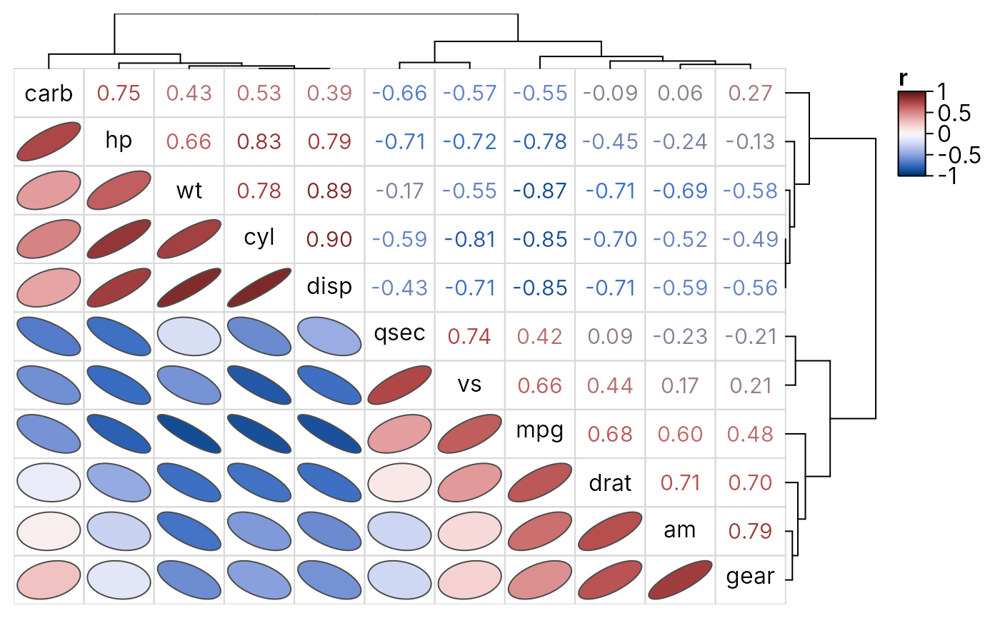
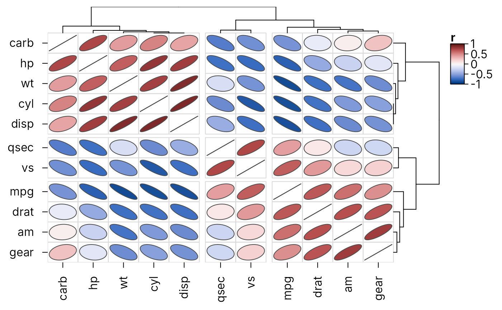
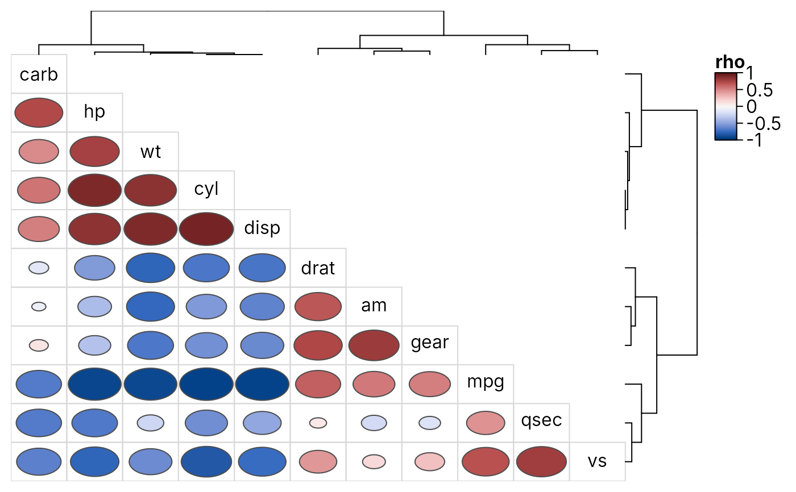

Correlation heatmaps with ellipses, numbers and dendrograms
Source:R/heat_map_cor.R
heat_map_cor.Rdheat_map_cor() draws a correlation matrix as a heatmap whose rows
and columns share one order, so the diagonal runs from the top left to the
bottom right and each triangle can show the correlations in a different
way. By default the lower triangle shows ellipses, whose shape follows the
correlation (rising to the right for positive correlations, falling for
negative ones and narrower the stronger the correlation), the upper
triangle the correlation coefficients written in their colours, and the
diagonal the names of the variables, with the variables clustered so that
correlated variables sit together.
Usage
heat_map_cor(
x,
method = c("pearson", "spearman", "kendall"),
use = "pairwise.complete.obs",
lower = "ellipse",
upper = "number",
diag = NULL,
tree = TRUE,
clust_method = "average",
...
)Arguments
- x
a numeric matrix or data.frame whose columns are correlated with
cor(non-numeric columns are left out), or a correlation matrix (square and symmetric, with values between -1 and 1 and ones on the diagonal), which is used as it is.- method
the correlation coefficient computed by
cor, either"pearson"(default),"spearman"or"kendall".- use
how
corhandles missing values, set to"pairwise.complete.obs"by default.- lower
the shape of the cells below the diagonal, set to
"ellipse"by default.- upper
the shape of the cells above the diagonal, set to
"number"by default.- diag
the cells on the diagonal:
"names"writes the names of the variables there instead of beside the axes, or any of the shapes. Set to"names"by default whenlowerandupperdiffer, and to their shape otherwise.- tree
logical indicating whether the variables should be clustered and their dendrograms drawn, set to TRUE by default. Otherwise the variables are kept in the order of
x, the first at the top left.- clust_method
the agglomeration method passed to
hclust, set to"average"by default.- ...
additional arguments passed to
heat_map, which replace the defaults chosen here, e.g.cell_col_scale,tree_cut_xandtree_cut_y, orroundfor the number of decimal places of the coefficients. Arguments that reorder the dendrograms (e.g.tree_order_x) would separate the rows from the columns and break the triangles.
Value
a heat_map object (see heat_map) whose data
is the correlation matrix.
Details
The variables are clustered with hclust on one minus
their correlations (1 - r), and the same dendrogram orders the rows
and columns. Any shape can be used in either triangle (see
cell_shape in heat_map): "ellipse",
"number", "circle" and "diamond" (sized by the
absolute correlation, as in corrplot), "rect" (full cells) or
"none" to leave a triangle empty.
Examples
# Ellipses below the diagonal, coefficients above
heat_map_cor(mtcars, popup = FALSE)

# Ellipses throughout, cut into three groups of variables
heat_map_cor(
mtcars,
upper = "ellipse",
tree_cut_x = 3,
tree_cut_y = 3,
popup = FALSE
)

# Rank correlations as circles in the lower triangle only
heat_map_cor(
mtcars,
method = "spearman",
lower = "circle",
upper = "none",
popup = FALSE
)
